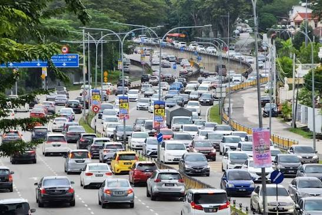
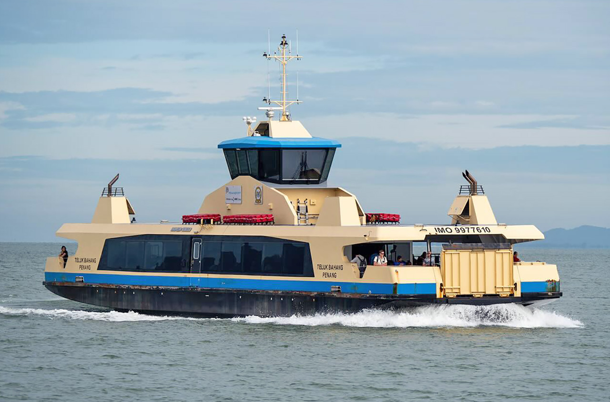
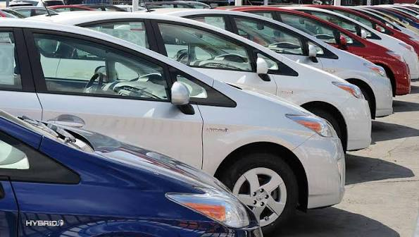
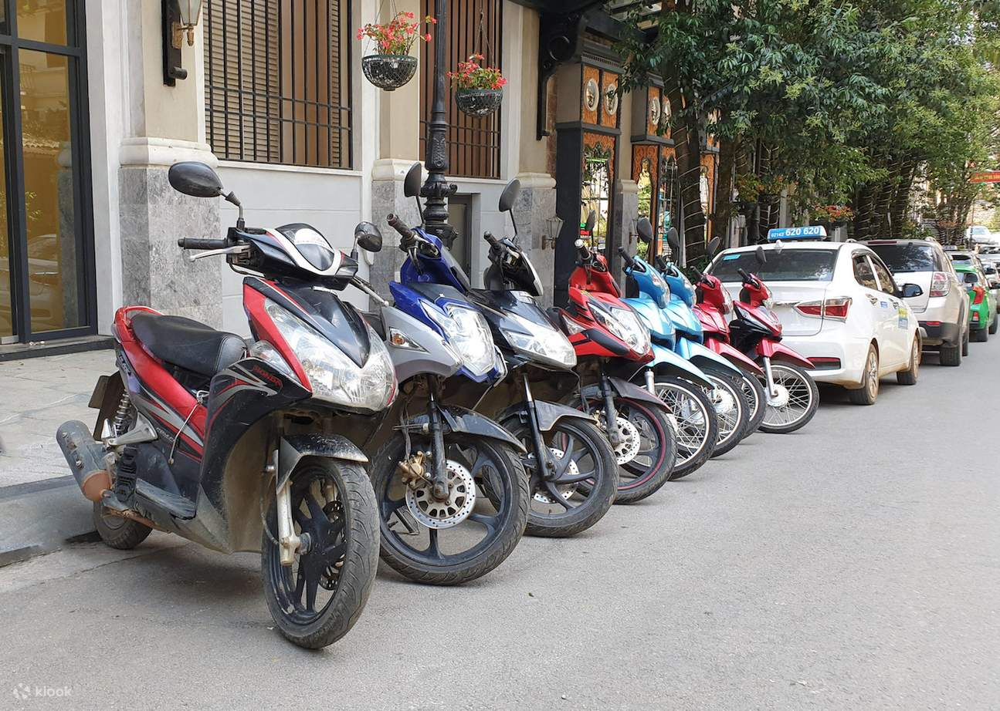

Transportation Guide
Explore Penang easily using buses, ferries, ride-hailing services, rental vehicles and walking routes.

Explore Penang easily using buses, ferries, ride-hailing services, rental vehicles and walking routes.
Penang offers several convenient transportation options for visitors. Choose public transport for affordability, ride-hailing for convenience or rental vehicles for greater travel flexibility.

Penang ferry services connect Butterworth on the mainland with George Town. The ferry is useful for travellers arriving by train, bus or other mainland transportation.
Rental vehicles offer greater freedom for visitors who wish to explore beyond central George Town.

Renting a car is suitable for families, groups and visitors planning to explore different parts of Penang Island.

Motorcycles can be convenient for experienced riders who prefer easier parking and flexible movement through busy areas.
Follow these tips for a safer and more comfortable journey around Penang.
Check your destination and estimated travel time before beginning your journey.
Traffic may become heavier during morning and evening commuting periods.
Carry some cash or suitable cashless payment methods when using public transport.
Choose recognised transport providers and confirm important journey details.
Wear seat belts and helmets and follow all local traffic regulations.
Online maps can help locate attractions, transport stops and alternative routes.
Visit these external websites for transportation information and directions.
Find information about public bus services, routes and transportation options.
Official WebsiteLearn more about ride-hailing and transportation services in Malaysia.
Official Website